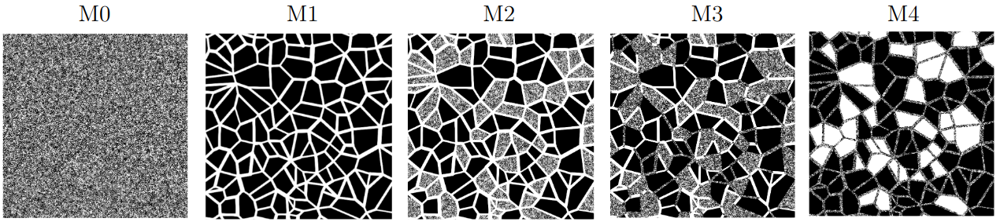

Image Preprocessing Tutorial for Multiscale Micromodel Simulations¶
This guide provides instructions on how to download, preprocess, and configure the Voronoi geometry images used in Multiscale Micromodels.
Environment Setup and Data Download¶
First, it is highly recommended to create a dedicated working directory to organize all files related to the Voronoi geometry simulations.
Download the original 80 x 80 mm images in Well-Known Text (.wkt) format from the
following link: Download WKT Images
You can download the five .wkt files individually or download the entire set using the provided .zip file.
Installing the polyToVTK Converter¶
Once the images are downloaded, you must convert them from .wkt to .raw format. The polyToVTK tool is a
C++ converter specifically designed to handle the requirements of these Voronoi simulations.
The source code relies exclusively on native C++ resources and libraries (C++17 standard is required).
Clone the repository and compile the tool using the following commands:
git clone -b 3d-extrusion --single-branch https://github.com/poro-labcc/polyToVTK.git
cd polyToVTK
make
Image Conversion Script¶
To automate the conversion process across all models (M0 to M4) and meshes, save the following bash script
as convert_meshes.sh in the directory containing your .wkt images.
#!/bin/bash
# Exit immediately if a command exits with a non-zero status
set -e
# ==============================================================
# Global Variables
# ==============================================================
CURRENT_DIR=$(pwd)
# Update this path if polyToVTK is installed elsewhere
POLYTOVTK="${CURRENT_DIR}/polyToVTK/polytovtk"
WKT_DIR="${CURRENT_DIR}/wkt_files"
OUT_DIR="${CURRENT_DIR}/simulation_files"
# ==============================================================
# Common Parameters
# ==============================================================
VAR_COMMON="-r 27500 52500 27500 52500 -t yzx -l 0 1 -p 0 0 1 1 1 1"
BUF_MESH1="-b 6 6 0 0 0 0"
BUF_MESH2="-b 12 12 0 0 0 0"
VAR_3D_MESH1="${BUF_MESH1} ${VAR_COMMON}"
VAR_3D_MESH2="${BUF_MESH2} ${VAR_COMMON}"
# ==============================================================
# Directory Organization
# ==============================================================
mkdir -p "${WKT_DIR}" "${CURRENT_DIR}/svg_files" "${OUT_DIR}"
mv ./*.wkt "${WKT_DIR}/" 2>/dev/null || true
mv ./*.svg "${CURRENT_DIR}/svg_files/" 2>/dev/null || true
for m in m0 m1 m2 m3 m4; do
for mesh in mesh1 mesh2; do
mkdir -p "${OUT_DIR}/${m}/${mesh}"
done
done
# ==============================================================
# WKT to RAW Conversions
# ==============================================================
# M0 - Micro pore scale
$POLYTOVTK -i "${WKT_DIR}/mm_alpha_006_micro_mono.wkt" --raw "${OUT_DIR}/m0/mesh1/m0_mesh1_r5.raw" -s 5000 5000 7 $VAR_3D_MESH1
$POLYTOVTK -i "${WKT_DIR}/mm_alpha_006_micro_mono.wkt" --raw "${OUT_DIR}/m0/mesh2/m0_mesh2_r2p5.raw" -s 10000 10000 14 $VAR_3D_MESH2
# M1 - Macro pore scale
$POLYTOVTK -i "${WKT_DIR}/mm_alpha_006_macro_mono.wkt" --raw "${OUT_DIR}/m1/mesh1/m1_mesh1_r4p42.raw" -s 5646 5646 7 $VAR_3D_MESH1
$POLYTOVTK -i "${WKT_DIR}/mm_alpha_006_macro_mono.wkt" --raw "${OUT_DIR}/m1/mesh2/m1_mesh2_r2p21.raw" -s 11292 11292 14 $VAR_3D_MESH2
# M2 - Porous grains
$POLYTOVTK -i "${WKT_DIR}/mm_alpha_006_withPorousGrains.wkt" --raw "${OUT_DIR}/m2/mesh1/m2_mesh1_r5.raw" -s 5000 5000 7 $VAR_3D_MESH1
$POLYTOVTK -i "${WKT_DIR}/mm_alpha_006_withPorousGrains.wkt" --raw "${OUT_DIR}/m2/mesh2/m2_mesh2_r2p5.raw" -s 10000 10000 14 $VAR_3D_MESH2
# M3 - Porous grains and throats
$POLYTOVTK -i "${WKT_DIR}/mm_alpha_006_withPorousGrainsWithPorousThroats.wkt" --raw "${OUT_DIR}/m3/mesh1/m3_mesh1_r4p86.raw" -s 5148 5148 7 $VAR_3D_MESH1
$POLYTOVTK -i "${WKT_DIR}/mm_alpha_006_withPorousGrainsWithPorousThroats.wkt" --raw "${OUT_DIR}/m3/mesh2/m3_mesh2_r2p43.raw" -s 10296 10296 14 $VAR_3D_MESH2
# M4 - Voids and porous throats
$POLYTOVTK -i "${WKT_DIR}/mm_alpha_006_withVoidsWithPorousThroats.wkt" --raw "${OUT_DIR}/m4/mesh1/m4_mesh1_r4p57.raw" -s 5468 5468 7 $VAR_3D_MESH1
$POLYTOVTK -i "${WKT_DIR}/mm_alpha_006_withVoidsWithPorousThroats.wkt" --raw "${OUT_DIR}/m4/mesh2/m4_mesh2_r2p28.raw" -s 10936 10936 14 $VAR_3D_MESH2


Fig. 31 - Micromodels based on the Voronoi tessellation: M0 - micro pore scale; M1 - macro pore scale; M2 - dual pore scale version of M1 with porous grains; M3 - dual pore scale version of M1 with porous grains and porous throats; M4 - dual pore scale version of M1 with voids and porous throats.¶
If you installed polyToVTK in a different directory, update the POLYTOVTK path variable in the script accordingly.
Make the script executable:
chmod +x convert_meshes.sh
And run it:
./convert_meshes.sh
The script generates both a .raw and an .mhd file for each
processed image.
Parameter Breakdown¶
The parameters utilized in the script perform the following physical boundary adjustments:
-r 27500 52500 27500 52500: Crops a 25 x 25 mm section from the center of the image.-t yzx: Transposes the axes to align the flow axis with the LBPM Z-axis.-l 0 1: Relabels the solid phase as0and the pore phase as1.-p 0 0 1 1 1 1: Applies solid padding to replicate the micromodel confinement conditions.-b 12 12 0 0 0 0: Applies a pore buffer to ensure connectivity for periodic simulations.-s 10296 10296 14: Defines the spatial XYZ dimensions of the domain (calculated prior to transposition, padding, and buffering).
LBPM Simulation Configuration¶
Below follow an example of .db file to run a absolute permearability simulation using the newly generated .raw files. For
more details see Multiscale Micromodels.
Domain {
Filename = "m1_mesh1_r4p42.raw" // Change for each simulation
ReadType = "8bit"
offset = 0, 0, 0
voxel_length = 4.42791 // Change for each simulation
N = 5648, 9, 5658 // Change for each simulation
nproc = 2, 1, 2 // Change for each simulation
n = 2824, 9, 2829 // Change for each simulation
ReadValues = 0, 1
WriteValues = 0, 1
InletLayers = 0, 0, 0
OutletLayers = 0, 0, 0
BC = 0
}
Visualization {
format = "vtk"
write_silo = true
save_8bit_raw = false
save_phase_field = true
save_pressure = true
save_velocity = true
}
MRT {
tau = 0.9330127
F = 0.0, 0.0, 1e-06
timestepMax = 1000000
tolerance = 1e-06
}
Make sure to update the Filename, voxel_length, N, nproc, and n fields according to the specific mesh and
hardware distribution youare simulating.